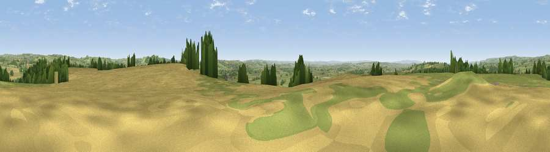

Viewpoint near Pylle
#8798 in England · top 15% of its area beats it · near PylleThe view, rendered

A 360° render of this exact spot computed from the terrain model, tree cover and land cover — summer colours, afternoon light, calibrated against photographs of famous viewpoints. Real trees, hedges and buildings will differ in detail.
The panorama
Grey silhouette: terrain skyline in each direction (720 bearings, Earth curvature and refraction included). Dashed green: skyline with trees (+15 m) and buildings (+8 m) as obstacles. Blue strip: how far the ground is visible on each bearing.
Where the view opens
Wedge length = distance to the farthest visible ground on that bearing (vegetation-aware). Rings at 10, 25 and 50 km.
What fills the view
54% grassland · 32% cropland · 12% woodland · 1% built-up
Angular shares of the visible panorama (visual magnitude), not map area. Landscape diversity 0.44 (0–1 Shannon).
Key numbers
More beautiful places nearby
The staircase of upgrades: each row has a higher view potential than everything closer. Driving times are estimates from straight-line distance, calibrated against real road routing — check an actual route before setting out.
| Place | Direction | Drive | Score |
|---|---|---|---|
| Doulting Sheep Sleight | NNE · 5 km | ~12 min | 66.2 |
| Viewpoint near Milton Clevedon | E · 5 km | ~12 min | 73.9 |
| Viewpoint near Lamyatt | ESE · 6 km | ~12 min | 77.8 |
| Beacon Batch | NNW · 24 km | ~39 min | 79.4 |
| Bleadon Hill [Loxton Hill] | NW · 32 km | ~49 min | 79.6 |
| Lewesdon Hill | SSW · 40 km | ~59 min | 83.3 |
| Viewpoint near West Bagborough | W · 44 km | ~64 min | 84.3 |
| Wills Neck | W · 45 km | ~65 min | 85.7 |
51.13298, -2.55411 · source: screening · position refined by local search. Computed location — check access rights before visiting.